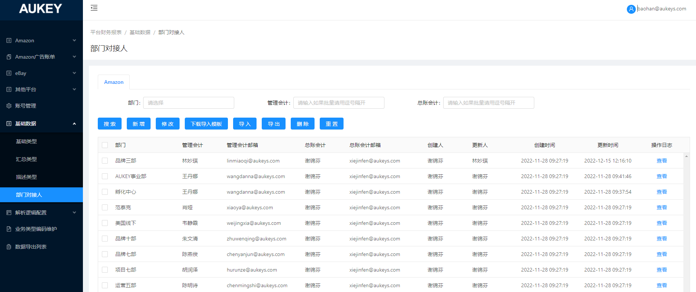

1.【新增】【修改】：若当前页面存在已维护的数据，则弹窗：【总账会计】【总账会计邮箱】文本框置灰，默认展示与已维护数据相同的值；
否则，【总账会计】【总账会计邮箱】文本框支持录入/修改，原逻辑不变；
2.【导入】新增校验逻辑如下：
2.1当前页面存在已维护的数据：则导入【总账会计】【总账会计邮箱】字段值需均与已维护数据相同；否则，该部分数据导入失败，并提示：第X行导入失败，失败原因：与列表【总账会计】【总账邮箱】不一致；
2.2当前页面不存在已维护的数据：则导入文件内部【总账会计】【总账会计邮箱】字段值需分别相同；否则，所有数据均导入失败，并提示：文件导入失败，失败原因：【总账会计】不一致；
【总账邮箱】不一致；